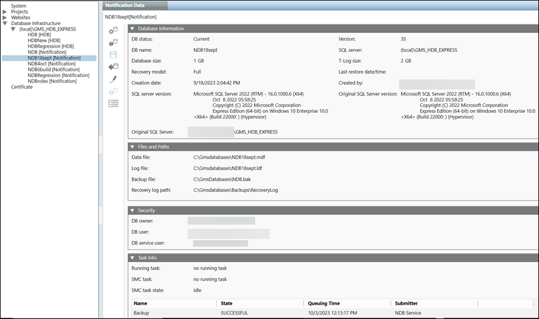
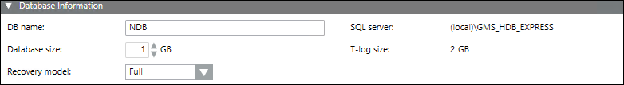
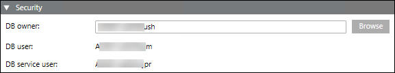
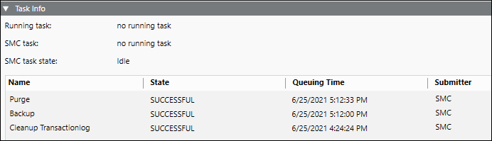

Notification Database Configuration
You need to configure the Notification SQL Server for creating a notification project.
SQL Server instance and SQL database are two different things. Notification needs separate SQL database to store its proprietary data (recipients, incidents, and notifications).
The SQL database is set using the Database Infrastructure node in the System Browser. For more information on linking SQL server instance and creating new NDB, refer to the Creating Notification Database (NDB) in SMC topic.

The toolbar icons and the following expanders help you to configure NDB.
Toolbar Options
The following table displays the toolbar option applicable for NDB.
NDB Toolbar | ||
Item | Name | Description |
Drop | Delete an existing NDB. | |
Purge | Removes the closed incidents from the NDB. This function typically is used before customer handover, after configuration is completed to delete the closed incidents that have been used for testing. | |
| Save | Save the data when: |
Backup | Back up an NDB to an NDB backup file. | |
| Edit | Edit an existing NDB. |
Upgrade | Upgrade the NDB to a new version. | |
Statistics | Displays the space occupied by notification incidents, recipient and internal entity. In addition, displays free space available in NDB. | |


Database Information Expander
This expander allows you to select a SQL Server for hosting the database and filling in a detailed log.

- DB name: Enter the name of the new database. The database name must be unique on the targeted SQL Server.
- SQL Server: Notification supports local as well as remote SQL servers.
NOTE: You need to enter the fully qualified domain name of the remote SQL server for establishing secure communication between Server project and remote SQL Server. - Database Size: Select or manually enter the database size. The minimum database size that can be entered or selected is 1 GB and the maximum database size is 10 GB.
You can prefer the Standard or Enterprise edition for expecting high performance with huge data size. - T-Log Size: Represents the transaction log size. The value of the T-Log size is dependent on the database size and is a multiple of two of the specified database size. For example, if the database size is 1 GB, then the T-Log size would be specified by the system as 2 GB.
- Recovery model: Select the type of recovery either Full or Simple. The default value is Full.
Files and Backup Expander
This section allows you to enter the file paths for the new Notification database as well as the folder path where SQL Server will place backup files created from the Notification database. You can use either a local or a remote SQL server instance.
Using a Local SQL Server Instance
The details to use a local SQL server instance are as follows:
- Data file: Browse or manually enter in the data file path of the Notification database. Enter the local SQL Server instance path.
- Log file: Browse or manually enter the transaction file path of the Notification database. Enter the local SQL Server instance path.
- Backup file: This path is needed when the database is present on remote SQL server (different from Notification server). In this situation, you need to configure the Backup file in SMC. This path must be accessible by the Process Monitor (PMON) user as well as the SQL Service Logon user so that you can make the backup.
- Recovery log path: The backup files created automatically are saved to this folder in the event of the backup variant full backup. This path should be accessible to SQL Service Logon user.
Using a Remote SQL Server Instance
The details to use a remote SQL server instance (SQL Server running on a machine other than the installation) are as follows:
- Data file: Manually enter in the data file path of the database. Enter a local path to the remote SQL Server instance.
- Log file: Manually enter the transaction file path of the database. Enter a local path to the remote SQL Server instance.
- Backup file: Manually enter the shared backup path of the database. Enter a local path to the remote SQL Server.
For the Shared Backup Path, when using a remote SQL Server, specify a shared folder path in UNC format so that both the Process Monitor (PMON) user as well as the SQL Service Logon user can access the generated backup files. Example of a path in UNC format: \\FileServer\NDBBackup. - Recovery log path: Manually enter the path for the backup files created automatically that are saved to this folder in the event of the backup variant full backup. This path should be accessible to SQL Service Logon user.
Security Expander
This expander displays the database owner details.

- DB owner: Desigo CC SMC user who requires NDB owner rights. The NDB owner must be different from the NDB user and the NDB service user.
NOTE: NDB owner should have all system admin rights on the local or remote SQL instance. - DB user: Desigo CC project user who requires NDB user rights for read and write operations. You can change it as required in System Account Settings. See Settings Expander in the SMC System Settings topic.
- DB service user: Displays the database service user details. This user can perform database maintenance activities such as database purge, database backup and database index refreshing. You can change it as required in System Account Settings. See Configure the Service Account section in the System Setting Procedure topic. The windows user configured as database service user should have the following file and folder permissions:
- Modify permission on folder mns located under [installation drive:]\[installation folder]\[project].
- Write permission on file MNS_DbMaintenanceService.log located under [installation drive:]\[installation folder]\GMSMainProject\Log.
Tips
- For security purposes, the Notification system stores the user credentials as well as device credentials in a file or database in an encrypted or hashed format.
- Notification uses a cryptographic hash algorithm to hash the user PIN in combination with a salt value. Additionally, Notification uses public key encryption (public key to encrypt, private key to decrypt) to protect device or service passwords when stored in a file or database.
- As part of the security feature, in the Password field, the number of dots or asterisks shown has no correlation with the actual length of the saved PIN. For example, the user interface displays 8 characters even if the configured PIN is only four characters in length.
Required Rights for Notification Database | ||||
| SQL System Administrator | Notification Database Owner | Notification Database User | Notification Database Service User |
Account | ||||
|
| <user defined> | System (PMON) | Service user |
Required Rights | ||||
Create, restore, or upgrade Notification Database | X |
|
|
|
Edit Notification database owner, Notification user and Notification service account user | X |
|
|
|
Drop Notification Database | X | X |
|
|
Receive the Notification Database information | X | X |
|
|
Edit Notification Database size | X | X |
|
|
Run Notification backup |
|
|
| X |
Purge the Notification Database |
|
|
| X |
Read and write to Notification Database |
|
| X |
|
Refresh Index |
|
|
| X |
Create Table |
|
|
| X |
Move Notification Database (Backup, Restore and Drop) | X |
|
|
|
Task Info Expander
The Task Info expander displays pending tasks or tasks in the following image.

- Running task: Displays the currently operating, automated tasks as well as tasks initiated from the System Management Console, for example Backup. The date of the last action is displayed to the right.
- SMC task: Displays the tasks started on the System Management Console, for example, Backup. The date of the last action is displayed to the right.
- SMC task state: Displays the state of tasks to be run namely, Idle (none), Planned, Operating.